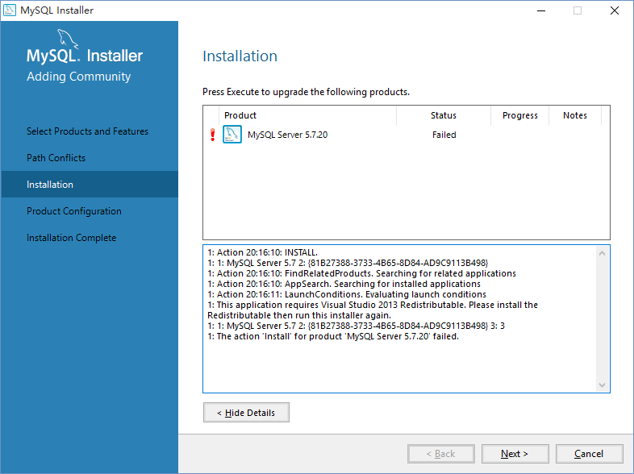
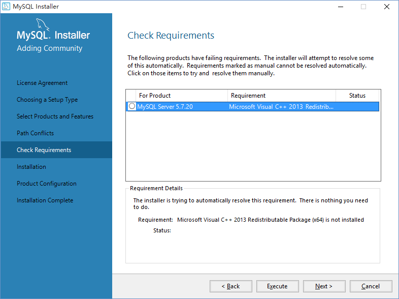
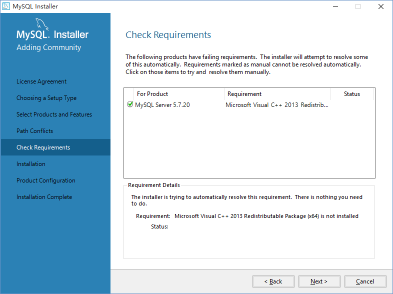
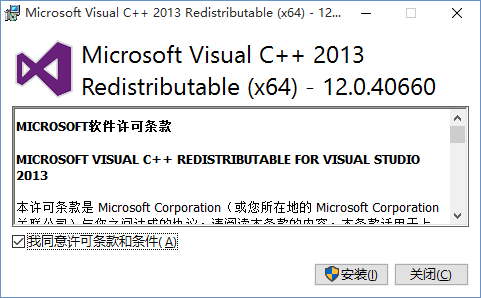
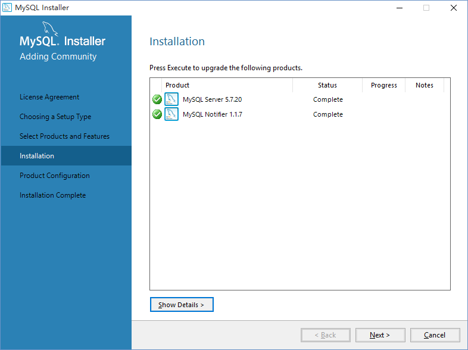

问题状况
在Win10下使用mysql-installer-community-5.7.20.0的msi包进行安装，试了好多次，MySQL Server 5.7.20的安装状态都显示为Failed，安装失败。

1.png
MySQL installer详细日志如下：
1: Action 20:16:10: INSTALL.
1: 1: MySQL Server 5.7 2: {81B27388-3733-4B65-8D84-AD9C9113B498}
1: Action 20:16:10: FindRelatedProducts. Searching for related applications
1: Action 20:16:10: AppSearch. Searching for installed applications
1: Action 20:16:11: LaunchConditions. Evaluating launch conditions
1: This application requires Visual Studio 2013 Redistributable. Please install the Redistributable then run this installer again.
1: 1: MySQL Server 5.7 2: {81B27388-3733-4B65-8D84-AD9C9113B498} 3: 3
1: The action 'Install' for product 'MySQL Server 5.7.20' failed.仔细查看日志，发现”This application requires Visual Studio 2013 Redistributable. Please install the Redistributable then run this installer again.”，在安装过程中确实提示需要安装Microsoft Visual c++ 2013 Redistributable。

2.png
可是我已经按照提示安装了，在系统的程序和功能里面也能看到”Microsoft Visual c++ 2013 Redistributable(X64) - 12.0.30501”的安装信息。

3.png
但是日志里面还是提示需要安装Visual Studio 2013 Redistributable。
解决办法
试着搜索了一下，按照网上的提示升级安装了12.0.40660版本的Microsoft Visual c++ 2013 Redistributable，再安装MySQL Server 5.7.20，果然问题就解决了。

4.png

5.png
暂时不知道是什么原因，可能是mysql-community-5.7.20.0版的bug吧。
附上Microsoft Visual C++ 2013 Redistributable Package 12.0.40660的下载链接：
来源: Microsoft Support
x86：点击下载
x64：点击下载